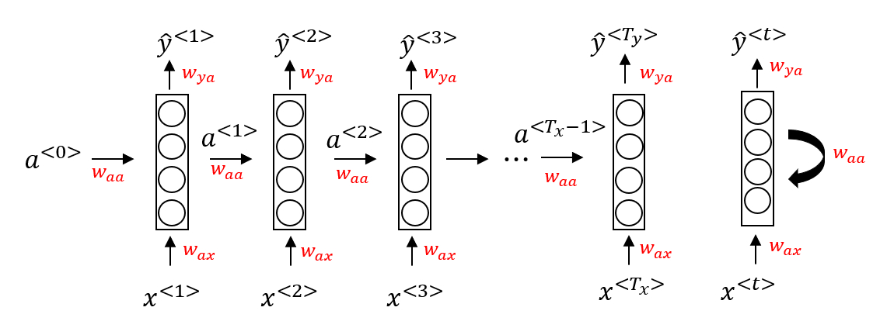
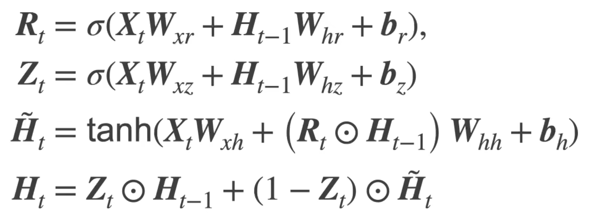
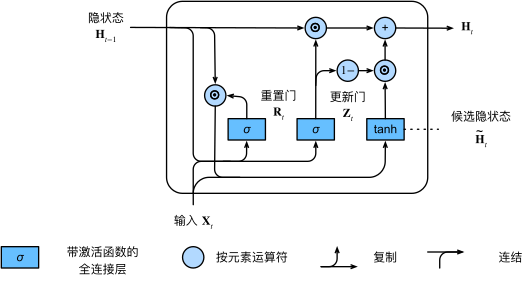
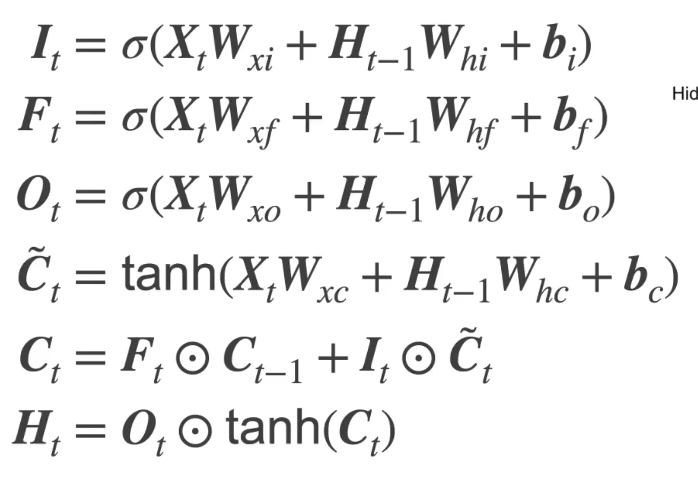
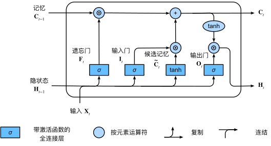

机器学习基础（三）循环神经网络
目录
背景（标准神经网络的局限）
对于序列数据（文本，语音等），使用标准神经网络存在以下问题：
- 对于不同的示例，输入和输出可能有不同的长度，因此输入层和输出层的神经元数量无法固定
- 从输入文本的不同位置学到的同一特征无法共享
- 模型中的参数太多，计算量太大（如果用基于词汇表的one-hot编码）
RNN（循环神经网络）
网络结构
a<n>表示第n时间步最后一层隐藏层的输出，同时也是n+1时间步输入的一部分
y-hat<n>表示第n时间步的输出（通过与a<n>全连接得到）
Waa表示a<n>对第n+1时间步输入的权重
Wax表示x<n>对第n时间步输入的权重
每个时间步是相同的网络（即同样的参数），输入数据序列有多大则有几个时间步

单个Cell的情况

与标准神经网络的区别
- 输入单元数量不受限
- 通过上层网络向下层的传导可以记忆序列的历史信息
RNN的缺陷
- 随着step（时间步）的增加，由于梯度在序列的靠前位置较为平缓（梯度消失），所以靠前位置的权重难以被有效更新
GRU（门控循环单元）
网络结构
Rt（重置门）：基于上个状态和当前输入的sigmoid输出
Zt（更新门）：基于上个状态和当前输入的sigmoid输出
Ht—Candidate（候选隐状态）：基于上个状态，当前输入和重置门的当前状态的中间值
Ht（隐状态）：基于上个状态，当前候选隐状态，更新门得到的当前状态

单个Cell的情况

重置门与更新门的作用
- 重置门有助于捕获序列中的短期依赖关系；更新门有助于捕获序列中的长期依赖关系
- 通过门控机制实现历史信息的选择性更新，使得 长期依赖 的信息得以保留并影响模型输出，以及缓解了梯度消失（狭义理解为优化了数据流向，即乘的小梯度变少了）
LSTM（长短期记忆网络）
网络结构
It（输入门）：基于上个状态和当前输入的sigmoid输出
Ft（遗忘门）：基于上个状态和当前输入的sigmoid输出
Ot（输出门）：基于上个状态和当前输入的sigmoid输出
Ct—Candidate（候选隐记忆）：基于上个状态和当前输入的当前状态的中间值
Ct（当前记忆）：基于遗忘门，输入门和当前输入的当前状态的中间值
Ht（隐状态）：基于输出门，当前记忆的tanh输出

单个Cell的情况

与GRU的区别
- GRU是对LSTM的简化，GRU将输入门和遗忘门简化为重置门，参数减少有利于提高训练速度
- LSTM由于模型较为复杂，相比GRU能更灵活处理不同问题